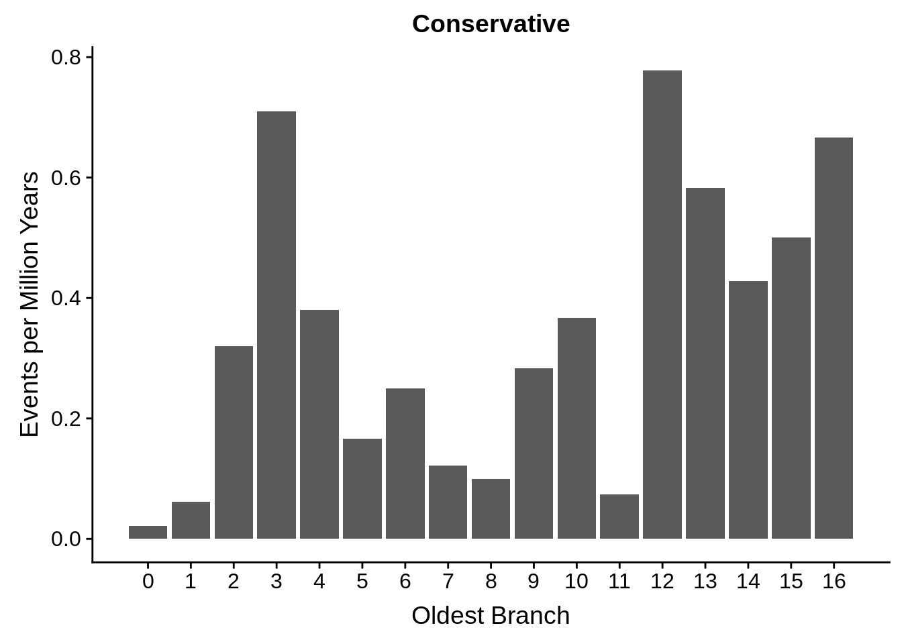
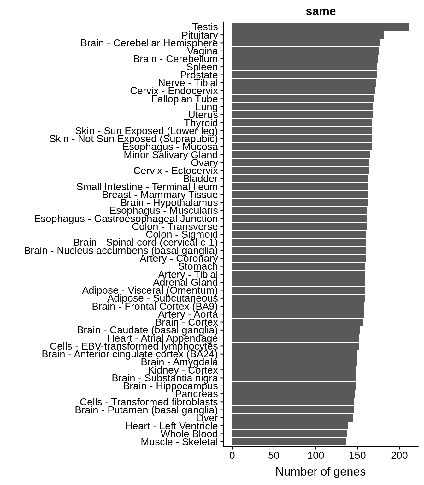
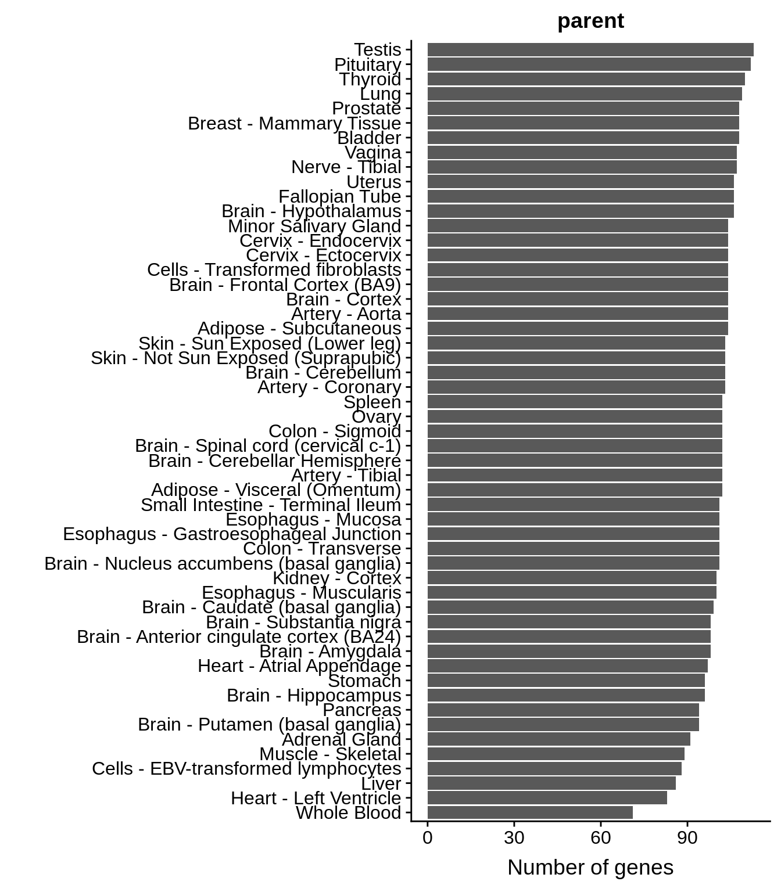

Aging
Philipp Ross
2018-10-06
Last updated: 2018-10-12
workflowr checks: (Click a bullet for more information)-
✖ R Markdown file: uncommitted changes
The R Markdown file has unstaged changes. To know which version of the R Markdown file created these results, you’ll want to first commit it to the Git repo. If you’re still working on the analysis, you can ignore this warning. When you’re finished, you can runwflow_publishto commit the R Markdown file and build the HTML. -
✔ Environment: empty
Great job! The global environment was empty. Objects defined in the global environment can affect the analysis in your R Markdown file in unknown ways. For reproduciblity it’s best to always run the code in an empty environment.
-
✔ Seed:
set.seed(12345)The command
set.seed(12345)was run prior to running the code in the R Markdown file. Setting a seed ensures that any results that rely on randomness, e.g. subsampling or permutations, are reproducible. -
✔ Session information: recorded
Great job! Recording the operating system, R version, and package versions is critical for reproducibility.
-
Great! You are using Git for version control. Tracking code development and connecting the code version to the results is critical for reproducibility. The version displayed above was the version of the Git repository at the time these results were generated.✔ Repository version: 0fbcc9f
Note that you need to be careful to ensure that all relevant files for the analysis have been committed to Git prior to generating the results (you can usewflow_publishorwflow_git_commit). workflowr only checks the R Markdown file, but you know if there are other scripts or data files that it depends on. Below is the status of the Git repository when the results were generated:
Note that any generated files, e.g. HTML, png, CSS, etc., are not included in this status report because it is ok for generated content to have uncommitted changes.Ignored files: Ignored: .RData Ignored: .Rhistory Ignored: .Rproj.user/ Ignored: analysis/figure/ Ignored: docs/figure/ Ignored: output/analyze/ Untracked files: Untracked: analysis/analyze_frameshifts.Rmd Untracked: output/aging/ Untracked: output/thirdset/standard_hits.tsv Unstaged changes: Modified: README.md Deleted: analysis.R Modified: analysis/aging.Rmd Modified: analysis/parse_blast.Rmd Deleted: code/parse_blast.R
Expand here to see past versions:
We woud like to categorize the genes into parent and offspring pairs. In order to do this, we need to estimate the earliest common ancestor with an orthologue of these genes.
library(tidyverse)── Attaching packages ──────────────────────────────────────────────────────────────────────────────────────── tidyverse 1.2.1 ──✔ ggplot2 3.0.0 ✔ purrr 0.2.5
✔ tibble 1.4.2 ✔ dplyr 0.7.6
✔ tidyr 0.8.1 ✔ stringr 1.3.1
✔ readr 1.1.1 ✔ forcats 0.3.0── Conflicts ─────────────────────────────────────────────────────────────────────────────────────────── tidyverse_conflicts() ──
✖ dplyr::filter() masks stats::filter()
✖ dplyr::lag() masks stats::lag()library(cowplot)
Attaching package: 'cowplot'The following object is masked from 'package:ggplot2':
ggsaveOrtholog retrieval
We can use biomart to download several orthologs and find out how far back we can date these genes.
conservative_gene_list <- readr::read_tsv("../output/thirdset/conservative_reciprocal_best_hits.tsv",col_names=T)$queryParsed with column specification:
cols(
query = col_character(),
subject = col_character()
)standard_gene_list <- readr::read_tsv("../output/thirdset/standard_hits.tsv",col_names=T)$queryParsed with column specification:
cols(
query = col_character(),
subject = col_character()
)human <- biomaRt::useMart("ensembl", dataset = "hsapiens_gene_ensembl")
chimp <- biomaRt::useMart("ensembl", dataset = "ptroglodytes_gene_ensembl")
orangutan <- biomaRt::useMart("ensembl", dataset = "pabelii_gene_ensembl")
rhesus <- biomaRt::useMart("ensembl", dataset = "mmulatta_gene_ensembl")
marmoset <- biomaRt::useMart("ensembl", dataset = "cjacchus_gene_ensembl")
mouse <- biomaRt::useMart("ensembl", dataset = "mmusculus_gene_ensembl")
guinea_pig <- biomaRt::useMart("ensembl", dataset = "cporcellus_gene_ensembl")
dog <- biomaRt::useMart("ensembl", dataset = "cfamiliaris_gene_ensembl")
cow <- biomaRt::useMart("ensembl", dataset = "btaurus_gene_ensembl")
armadillo <- biomaRt::useMart("ensembl", dataset = "dnovemcinctus_gene_ensembl")
opossum <- biomaRt::useMart("ensembl", dataset = "mdomestica_gene_ensembl")
platypus <- biomaRt::useMart("ensembl", dataset = "oanatinus_gene_ensembl")
chicken <- biomaRt::useMart("ensembl", dataset = "ggallus_gene_ensembl")
lizard <- biomaRt::useMart("ensembl", dataset = "acarolinensis_gene_ensembl")
frog <- biomaRt::useMart("ensembl", dataset = "xtropicalis_gene_ensembl")
coelacanth <- biomaRt::useMart("ensembl", dataset = "lchalumnae_gene_ensembl")
fugu <- biomaRt::useMart("ensembl", dataset = "ttruncatus_gene_ensembl")
zebrafish <- biomaRt::useMart("ensembl", dataset = "drerio_gene_ensembl")
hagfish <- biomaRt::useMart("ensembl", dataset = "eburgeri_gene_ensembl")
lamprey <- biomaRt::useMart("ensembl", dataset = "pmarinus_gene_ensembl")
worm <- biomaRt::useMart("ensembl", dataset = "celegans_gene_ensembl")
fly <- biomaRt::useMart("ensembl", dataset = "dmelanogaster_gene_ensembl")
yeast <- biomaRt::useMart("ensembl", dataset = "scerevisiae_gene_ensembl")
species_lookup_table <- c("human","chimp","orangutan","rhesus","marmoset","mouse",
"guinea_pig","dog","cow","armadillo","oppossum","platypus",
"chicken","lizard","frog","coelacanth","fugu","zebrafish",
"hagfish","lamprey","worm","fly","yeast")
branch_lookup_table <- c("16","15","14","13","12","11","11","10","10","9","8",
"7","6","6","5","4","3","3","2","2","1","1","0")
dbs <- c(human,chimp,orangutan,rhesus,marmoset,mouse,guinea_pig,dog,cow,
armadillo,opossum,platypus,chicken,lizard,frog,coelacanth,fugu,
zebrafish,hagfish,lamprey,worm,fly,yeast)retrieve_orhologs <- function(species_lookup_table, branch_lookup_table, dbs, gene_list) {
out <- tibble::tibble(human_id=character(),
ortholog_id=character(),
organism=character())
for (i in 2:length(species_lookup_table)) {
result <- biomaRt::getLDS(
attributes = c("ensembl_gene_id"),
filters = "ensembl_gene_id",
values = gene_list,
mart = human,
attributesL = c("ensembl_gene_id"),
martL = dbs[[i]])
result <- dplyr::rename(result,human_id=Gene.stable.ID,ortholog_id=Gene.stable.ID.1) %>%
dplyr::mutate(organism=species_lookup_table[i],branch=branch_lookup_table[i]) %>%
tibble::as_tibble()
out <- dplyr::bind_rows(out,result)
}
return(out)
}Conservative set orthologs
conservative_orthos <- retrieve_orhologs(species_lookup_table,branch_lookup_table,dbs,conservative_gene_list)
in_humans <- length(unique(conservative_gene_list)) - length(unique(conservative_orthos$human_id))
g <- conservative_orthos %>%
dplyr::group_by(human_id) %>%
dplyr::summarize(oldest=(min(as.integer(branch)))) %>%
dplyr::ungroup() %>%
dplyr::bind_rows(.,tibble::tibble(human_id=as.character(1:in_humans),oldest=rep(16,in_humans))) %>%
ggplot(aes(x=oldest)) + geom_histogram(stat="count") +
xlab("Oldest Branch") +
scale_x_continuous(breaks=0:16,labels=c("0","1","2","3","4","5","6","7","8","9","10","11","12","13","14","15","16"))Warning: Ignoring unknown parameters: binwidth, bins, padprint(g)
cowplot::save_plot("../output/aging/conservative_ages.svg",g)
cowplot::save_plot("../output/aging/conservative_ages.png",g)Standard set orthologs
standard_orthos <- retrieve_orhologs(species_lookup_table,branch_lookup_table,dbs,standard_gene_list)
in_humans <- length(unique(standard_gene_list)) - length(unique(standard_orthos$human_id))
g <- standard_orthos %>%
dplyr::group_by(human_id) %>%
dplyr::summarize(oldest=(min(as.integer(branch)))) %>%
dplyr::ungroup() %>%
dplyr::bind_rows(.,tibble::tibble(human_id=as.character(1:in_humans),oldest=rep(16,in_humans))) %>%
ggplot(aes(x=oldest)) + geom_histogram(stat="count") +
xlab("Oldest Branch") +
scale_x_continuous(breaks=0:16,labels=c("0","1","2","3","4","5","6","7","8","9","10","11","12","13","14","15","16"))Warning: Ignoring unknown parameters: binwidth, bins, padprint(g)
cowplot::save_plot("../output/aging/standard_ages.svg",g)
cowplot::save_plot("../output/aging/standard_ages.png",g)Parent-offspring assignments
conservative_rbh <- readr::read_tsv("../output/thirdset/conservative_reciprocal_best_hits.tsv",col_names=T)Parsed with column specification:
cols(
query = col_character(),
subject = col_character()
)tmp1 <- conservative_orthos %>%
dplyr::group_by(human_id) %>%
dplyr::summarize(oldest=(min(as.integer(branch)))) %>%
dplyr::ungroup() %>%
dplyr::inner_join(conservative_rbh, by=c("human_id"="query")) %>%
dplyr::rename(query=human_id,query_branch=oldest)
tmp2 <- conservative_orthos %>%
dplyr::group_by(human_id) %>%
dplyr::summarize(oldest=(min(as.integer(branch)))) %>%
dplyr::ungroup() %>%
dplyr::inner_join(conservative_rbh, by=c("human_id"="subject")) %>%
dplyr::rename(subject=human_id,subject_branch=oldest)
potbl <- dplyr::inner_join(tmp1,tmp2)Joining, by = c("query", "subject")rm(tmp1,tmp2)
potbl$query_relation <- apply(potbl, 1, function(row) {ifelse(row[[2]] == row[[4]],"same",ifelse(row[[2]] < row[[4]],"parent","offspring"))})
potbl$subject_relation <- apply(potbl, 1, function(row) {ifelse(row[[2]] == row[[4]],"same",ifelse(row[[2]] > row[[4]],"parent","offspring"))})
query <- potbl[,c(1,2,5)] %>% dplyr::rename(gene_id=query,branch=query_branch,relation=query_relation)
subject <- potbl[,c(3,4,6)] %>% dplyr::rename(gene_id=subject,branch=subject_branch,relation=subject_relation)
potbl <- dplyr::bind_rows(query,subject) %>% dplyr::distinct()
g <- ggplot(potbl,aes(x=branch)) +
geom_bar(stat="count") +
facet_grid(~relation)
print(g)
cowplot::save_plot("../output/aging/parent_offspring.svg",g)
cowplot::save_plot("../output/aging/parent_offspring.png",g)Tissue expression analysis
What tissues are these genes expressed in?
tpm_threshold <- 2
relationships <- c("same","parent","offspring")
gtex <- readr::read_tsv("../data/GTEx_Analysis_2016-01-15_v7_RNASeQCv1.1.8_gene_median_tpm.gct",skip=2,col_names=T) %>%
dplyr::select(-Description) %>%
tidyr::gather(key = tissue, value = exp, -gene_id)Parsed with column specification:
cols(
.default = col_double(),
gene_id = col_character(),
Description = col_character()
)See spec(...) for full column specifications.# remove annoying ".#" parts of each gene ID
gtex$gene_id <- sapply(stringr::str_split(gtex$gene_id,"[.]"), function(x) {x[1]})
fgtex <- dplyr::inner_join(gtex,potbl) %>%
dplyr::distinct()Joining, by = "gene_id"for (relation in relationships) {
tissue_expression <- fgtex %>%
dplyr::filter(relation==relation) %>%
dplyr::filter(exp > tpm_threshold) %>%
dplyr::group_by(tissue,) %>%
dplyr::summarise(n=n()) %>%
dplyr::arrange(desc(n))
g <- ggplot(tissue_expression, aes(x=reorder(tissue, n),y=n)) +
geom_bar(stat="identity") +
coord_flip() +
ylab("Number of genes") +
xlab("") +
ggtitle(relation)
cowplot::save_plot(paste0("../output/aging/",relation,"_tissue_expression_barplot.png"),plot=g)
print(g)
}


How many tissues are most genes expressed in?
for (relation in relationships) {
gene_expression <- fgtex %>%
dplyr::filter(relation==relation) %>%
dplyr::group_by(gene_id) %>%
dplyr::summarise(n = sum(exp > tpm_threshold))
g <- ggplot(gene_expression, aes(x=n)) +
geom_histogram(color="grey70") +
xlab("Number of Tissues") +
ylab("Number of Genes")
cowplot::save_plot(paste0("../output/aging/",relation,"_gene_expression_distribution.png"),plot=g)
print(g)
}`stat_bin()` using `bins = 30`. Pick better value with `binwidth`.
`stat_bin()` using `bins = 30`. Pick better value with `binwidth`.
`stat_bin()` using `bins = 30`. Pick better value with `binwidth`.
`stat_bin()` using `bins = 30`. Pick better value with `binwidth`.
`stat_bin()` using `bins = 30`. Pick better value with `binwidth`.
`stat_bin()` using `bins = 30`. Pick better value with `binwidth`.
g <- ggplot(fgtex, aes(x=relation,y=log2(exp+1))) +
geom_boxplot() +
xlab("Relationship") +
ylab("Log2 Expression")
cowplot::save_plot(paste0("../output/aging/",relation,"_gene_expression_distribution.png"),plot=g)
print(g)
Session information
sessionInfo()R version 3.5.0 (2018-04-23)
Platform: x86_64-pc-linux-gnu (64-bit)
Running under: Gentoo/Linux
Matrix products: default
BLAS: /usr/local/lib64/R/lib/libRblas.so
LAPACK: /usr/local/lib64/R/lib/libRlapack.so
locale:
[1] LC_CTYPE=en_US.UTF-8 LC_NUMERIC=C
[3] LC_TIME=en_US.UTF-8 LC_COLLATE=en_US.UTF-8
[5] LC_MONETARY=en_US.UTF-8 LC_MESSAGES=en_US.UTF-8
[7] LC_PAPER=en_US.UTF-8 LC_NAME=C
[9] LC_ADDRESS=C LC_TELEPHONE=C
[11] LC_MEASUREMENT=en_US.UTF-8 LC_IDENTIFICATION=C
attached base packages:
[1] stats graphics grDevices utils datasets methods base
other attached packages:
[1] gdtools_0.1.7 bindrcpp_0.2.2 cowplot_0.9.3 forcats_0.3.0
[5] stringr_1.3.1 dplyr_0.7.6 purrr_0.2.5 readr_1.1.1
[9] tidyr_0.8.1 tibble_1.4.2 ggplot2_3.0.0 tidyverse_1.2.1
loaded via a namespace (and not attached):
[1] Biobase_2.40.0 httr_1.3.1 bit64_0.9-7
[4] jsonlite_1.5 R.utils_2.7.0 modelr_0.1.2
[7] assertthat_0.2.0 stats4_3.5.0 blob_1.1.1
[10] cellranger_1.1.0 yaml_2.2.0 progress_1.2.0
[13] pillar_1.3.0 RSQLite_2.1.1 backports_1.1.2
[16] lattice_0.20-35 glue_1.3.0 digest_0.6.17
[19] rvest_0.3.2 colorspace_1.3-2 htmltools_0.3.6
[22] R.oo_1.22.0 plyr_1.8.4 XML_3.98-1.16
[25] pkgconfig_2.0.2 broom_0.5.0 biomaRt_2.36.1
[28] haven_1.1.2 scales_1.0.0 svglite_1.2.1
[31] whisker_0.3-2 git2r_0.23.0 IRanges_2.14.12
[34] withr_2.1.2 BiocGenerics_0.26.0 lazyeval_0.2.1
[37] cli_1.0.1 magrittr_1.5 crayon_1.3.4
[40] readxl_1.1.0 memoise_1.1.0 evaluate_0.11
[43] R.methodsS3_1.7.1 nlme_3.1-137 xml2_1.2.0
[46] tools_3.5.0 prettyunits_1.0.2 hms_0.4.2
[49] S4Vectors_0.18.3 munsell_0.5.0 AnnotationDbi_1.42.1
[52] compiler_3.5.0 rlang_0.2.2 grid_3.5.0
[55] RCurl_1.95-4.11 rstudioapi_0.8 bitops_1.0-6
[58] labeling_0.3 rmarkdown_1.10 gtable_0.2.0
[61] DBI_1.0.0 curl_3.2 reshape2_1.4.3
[64] R6_2.3.0 lubridate_1.7.4 knitr_1.20
[67] bit_1.1-14 bindr_0.1.1 workflowr_1.1.1
[70] rprojroot_1.3-2 stringi_1.2.4 parallel_3.5.0
[73] Rcpp_0.12.19 tidyselect_0.2.4
This reproducible R Markdown analysis was created with workflowr 1.1.1